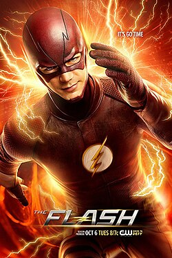
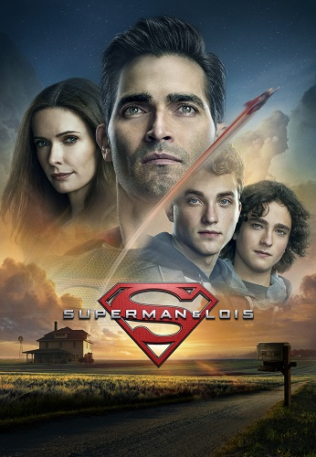

Gênero: Ação, Ficção Científica, Super-herói Na série "The Flash", o cientista forense Barry Allen ganha supervelocidade após um acidente com um acelerador de partículas. Adotando o nome Flash, ele se torna o protetor de Central City, enfrentando meta-humanos perigosos, ameaças de outras dimensões e crises temporais, tudo enquanto lida com dilemas pessoais e o peso de alterar o futuro.

Superman & Lois Gênero: Ação, Drama, Super-herói "Superman & Lois" traz uma nova abordagem para os icônicos personagens da DC. Agora pais de dois adolescentes, Clark Kent e Lois Lane enfrentam o desafio de criar uma família enquanto lidam com ameaças globais e inimigos poderosos. A série mistura drama familiar com ação épica, explorando o que significa ser herói dentro e fora das batalhas.

Gênero: Ação, Policial, Drama Inspirada na série clássica de 1975, "S.W.A.T." acompanha o sargento Daniel "Hondo" Harrelson, um ex-fuzileiro naval encarregado de liderar uma equipe de elite da polícia de Los Angeles. Dividido entre a lealdade à comunidade onde cresceu e ao dever com a força policial, Hondo enfrenta situações de alto risco enquanto busca justiça, respeito e equilíbrio social.